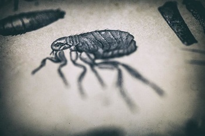
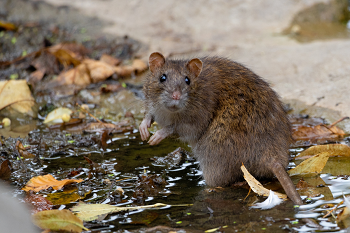
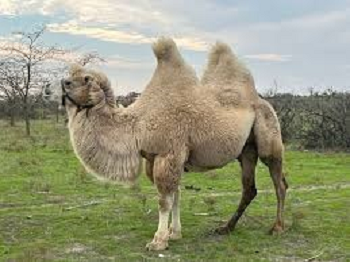

- Главная
- История
- Описание болезни
- Переносчики
- Целители
- защита
- Методы лечения
- Чумной форт
- Шарль де Лорм
- Врачи
- МЕНЮ
Переносчики болезни:
Основными переносчиками бубонной чумы являются блохи, паразитирующие на грызунах, которые являются основным источником инфекции. Когда зараженная блоха кусает человека, она передает бактерию Yersinia pestis через укус. К грызунам-носителям инфекции относятся сурки, суслики, песчанки, полевки, крысы и другие.
- Блохи- Наиболее частый переносчик.
Они заражаются, питаясь кровью инфицированных животных, а затем, в процессе укуса
человека, передают бактерии в ранку.

- Грызуны- Являются основным резервуаром инфекции в дикой природе и
вблизи человека. К ним относятся сурки, суслики, песчанки, полевки, крысы и зайцеобразные.

- Другие животные- Реже источником инфекции могут быть домашние животные, такие
как кошки, а также верблюды.

- Прямой контакт- Возможно заражение при непосредственном контакте с больным животным, например, при разделке туши или употреблении в пищу зараженного мяса.